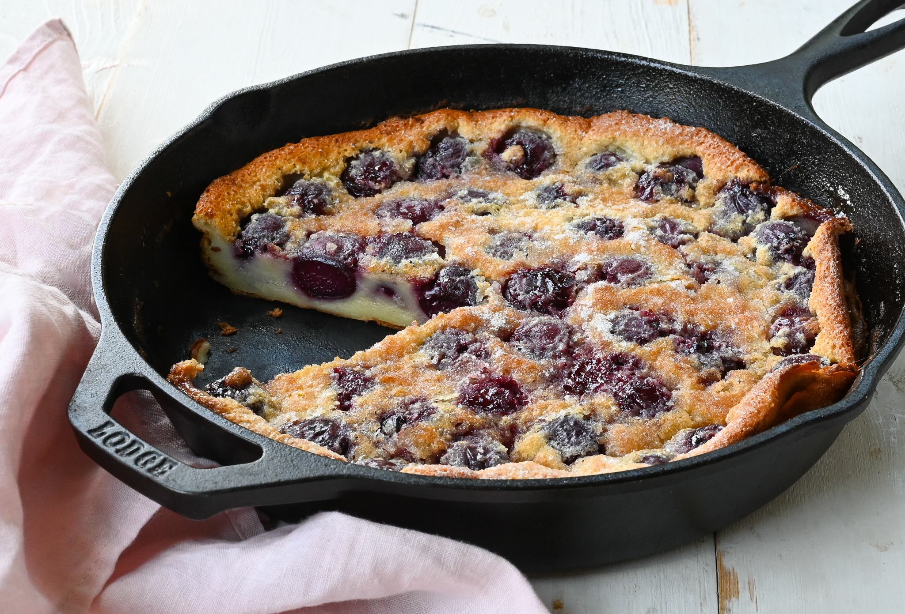

Originating from the Limousin area in France and dating back to at least the mid-1800s, clafoutis is a traditional, crustless French flan, tart, or a type of thick pancake typically consisting of layers of batter and fruit. Its name stems from the French word clafir, meaning to fill. If cherries are not available, the dessert can be made with any seasonal fruits, and there is even a savory version of clafoutis filled with cherry tomatoes, mozzarella, prosciutto, potatoes, and ham.
Meal prep time : 40 minutes
Servings : 6